People Tasks User Guide
Overview
People tasks can be created in Aquera Admin console for any critical tasks that require people involvement. The Admin console enables you to create task definitions and use an inbuilt method to create tasks for specific events (for example, user deletion in an orchestration process) based on the task definition. The method enables you to assign tasks to a user for their action.
For example, if an approval is required for creating a specific type of users in the target application during a scheduled script orchestration, a people task can be defined in the Admin console and an orchestration script can be written to create a task based on the task definition. A task instance is created when the orchestration runs and the user to which the task is assigned can take appropriate actions on this task. The users will be created based on the action performed on the task instance.
This document describes the following procedures:
- Creating a Task Definition
- Creating People Tasks Using Script Orchestration
- Task Instance Creation
- People Action on the Tasks
Creating a Task Definition
|
NOTE: |
|
|
|
The people task Manager permission must be enabled for you to create a task definition. 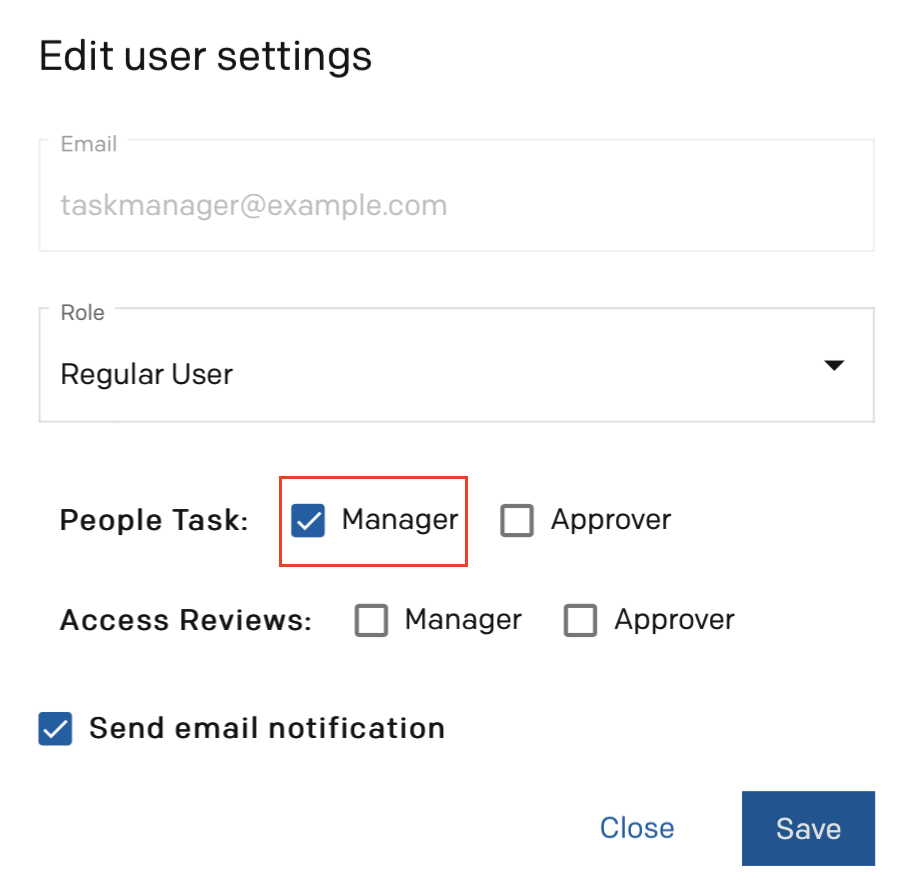 |
Creation of a task definition mainly involves setting up the following details:
- Adding Data Fields
- Adding list of applications
- Writing the script for handling the actions performed in the task
- Log in to Aquera Admin.
- Click People Task on the left navigation pane. The People Task page is displayed.
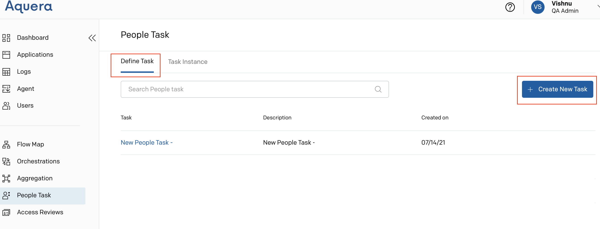
The Define Task tab is displayed by default. It lists all the people task definitions that you have created.
- Click Create New Task.The Add Task page is displayed.
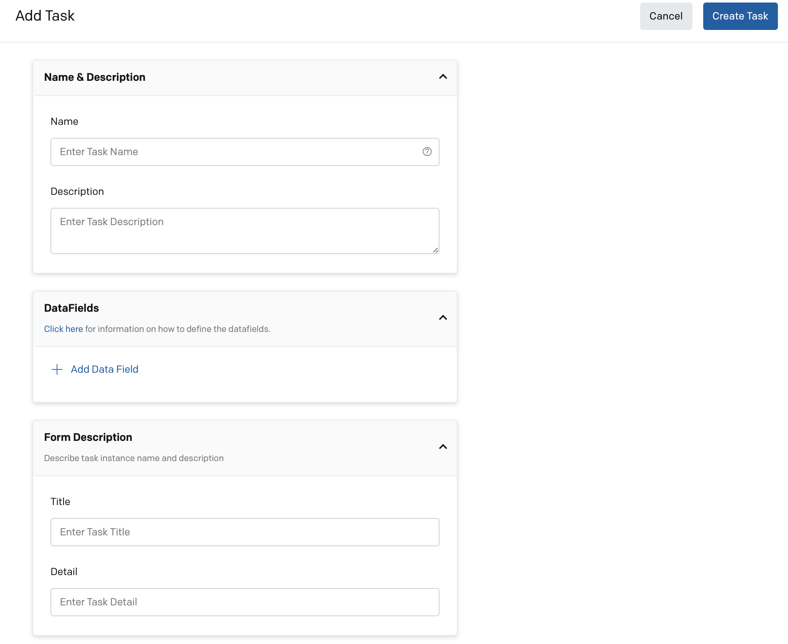
This page consists of the following sections:
-
Name & Description - Enter a name for the people task definition and a short description of it.
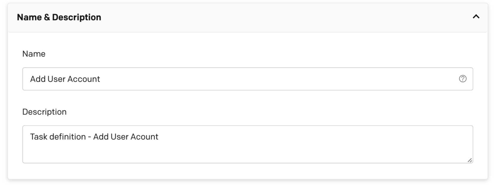
-
Data Fields - Add the data fields that must be displayed for the people task.
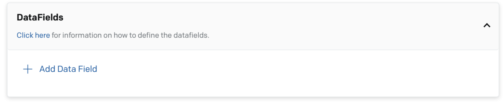
Refer to the Adding Data Fields section for details.
-
Form Description - This section is used to set the title of the task instance that will be created and its description.
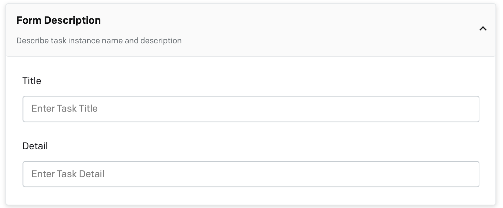
-
Title - Enter the title that will be displayed for each task instance. You can also include the values of the data fields in the title. In order to include the data field value in the title string, the name of the data field must be entered as ${attribute name}. If the attribute name is an object, then sub-attributes of that object can be referenced by the following notation ${attributeName.subAttributeName}. For example, Add Account for ${User.userName}.
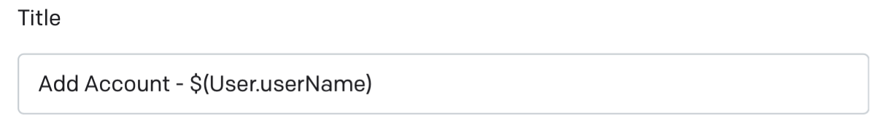
-
Detail - Enter the details that must be displayed for the task instance. You can also include the object attributes in the details. The format to add an attribute is ${<user attribute name>}. For example, Add Account for ${User.userName}.
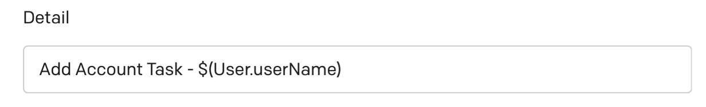
-
Title - Enter the title that will be displayed for each task instance. You can also include the values of the data fields in the title. In order to include the data field value in the title string, the name of the data field must be entered as ${attribute name}. If the attribute name is an object, then sub-attributes of that object can be referenced by the following notation ${attributeName.subAttributeName}. For example, Add Account for ${User.userName}.
-
Applications - Add the list of applications that need to be referenced within the script in the Action Handler section of the page.
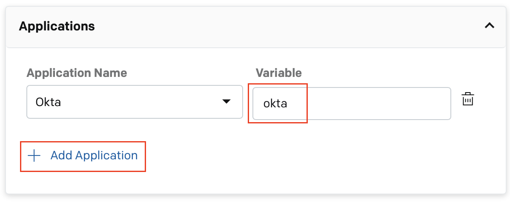
Click Add Application and select the required application from the Application Name drop-down. Make sure that you have already created the required application in the Aquera Admin console.
Enter the Variable name, which will be used in the Action Handler script to refer to the application.
Add as many applications as required.
-
Action Handler - Enter the script to be executed when the assigned person performs an action on the task instance.
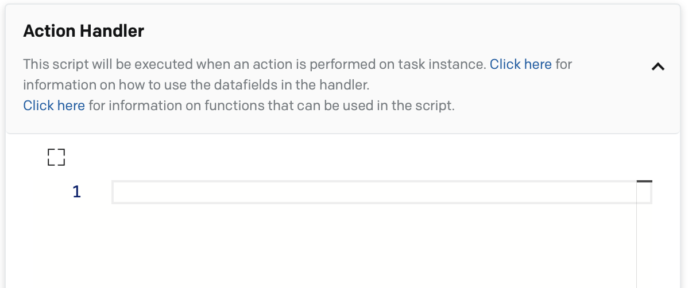
Refer to the Handling Actions section for details.
-
Name & Description - Enter a name for the people task definition and a short description of it.
- Click Create Task to create the task definition.
Adding Data Fields
The data fields enable the person to enter data values while performing an action on the task. The values in these data fields may be manually entered during the action on the task or populated dynamically, for example, when the orchestration runs.
- In the Data Fields section, click Add Data Field. The following pop-up window is displayed.
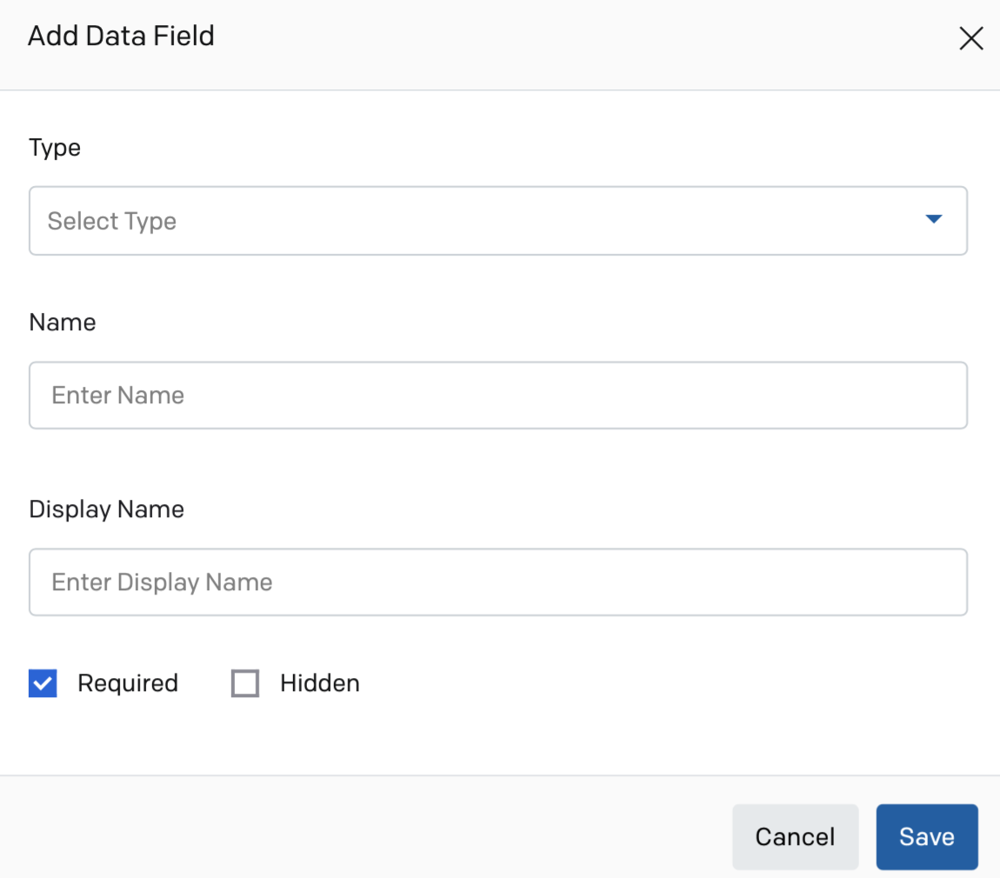
- Enter a Name and Display Name for the data field. The Name of the data field is used for reference within the script in the Action Handler section. It can also be used in the task instance title and detail. The Display Name is displayed for the data field in the task instance when the assigned user opens the task for their action.
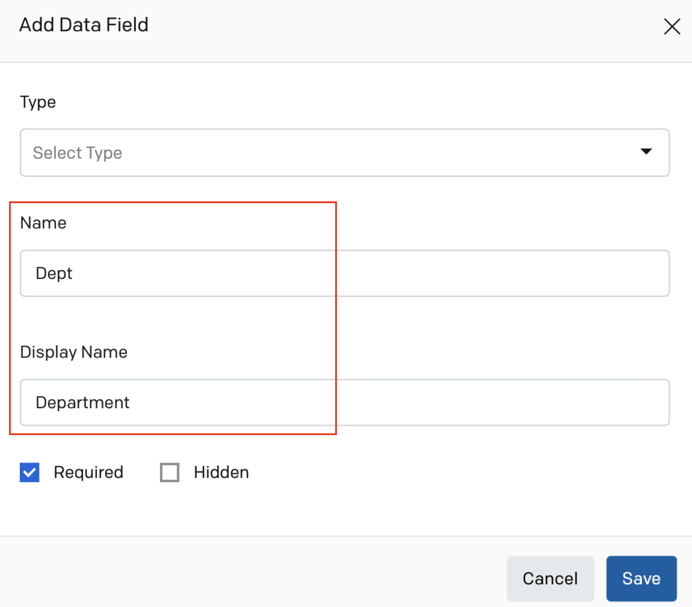
- Select Required if the data field has to be a mandatory field. Else, it will be an optional field.
- Select Hidden if the data field has to be hidden.
- Select one of the following data types from the Select Type drop-down:
Data Field Type Description String Select String if the data field has to be a text box where a string data value can be entered.
The following fields are displayed when you select String. These fields are optional.
- Default Value: The default value to be displayed in this data field.
- Regular Expression: The expression to be used for validating the data that will be entered in this data field.
- Validation Message: The message to be displayed when the data validation fails.
- Help text: The help text to be displayed for the data field in the task instance or in the workflow orchestration.
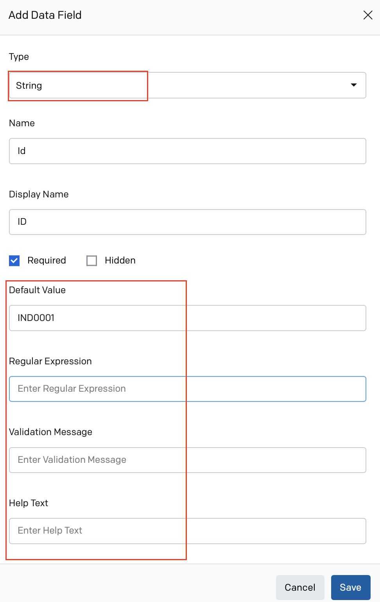
List Select List if the data field has to be a drop-down list from which a value can be selected.
You can add the values one by one in the Enter List Values field and press Enter/Return key to append the value to the list. These values will be displayed in the drop-down list.
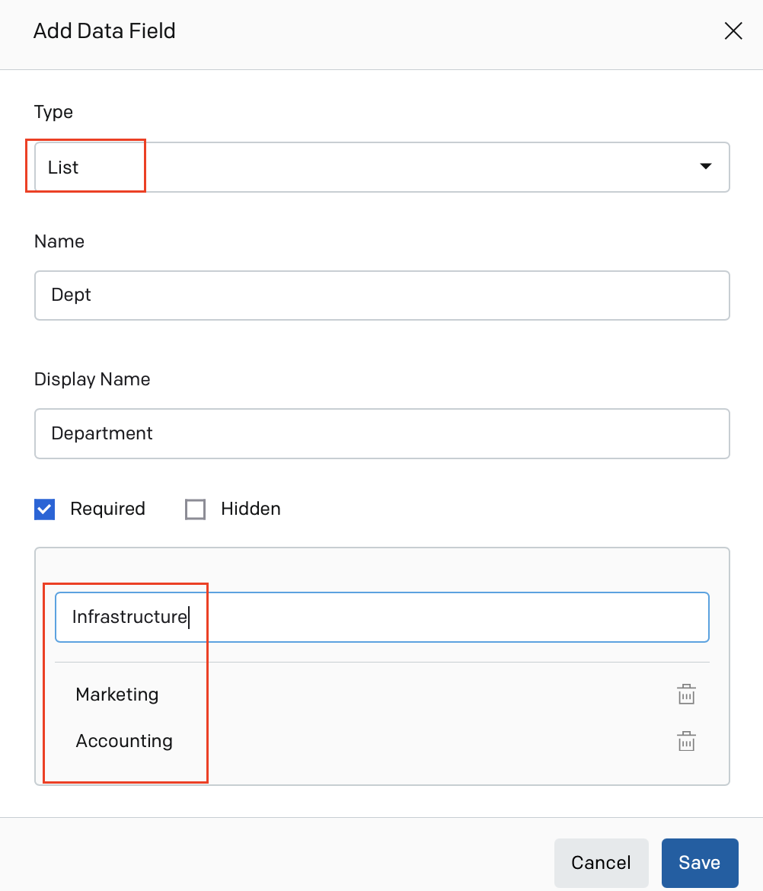
You can delete an entered item by clicking the delete icon next to the item.
Object Select Object to add an object data field.
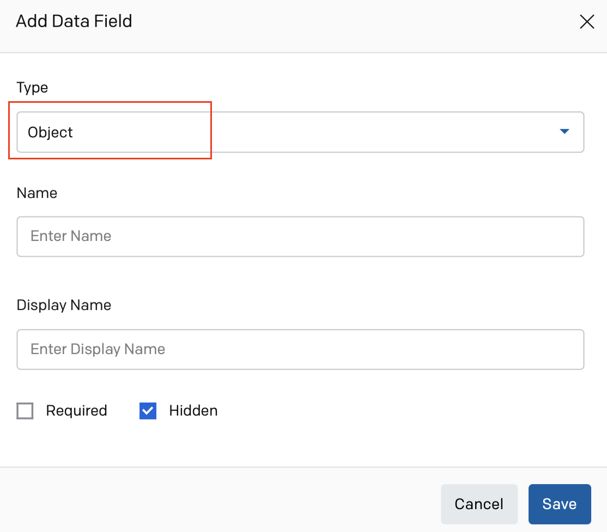
Action Select Action to include a button for the person to perform an action on the task instance.
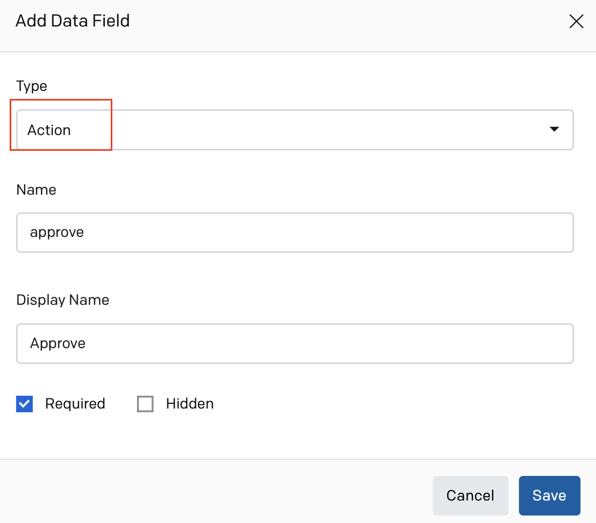
- Click Save. The data fields are added.
|
Note: |
You can modify and delete the data fields that you have added using the Edit and Delete icons. 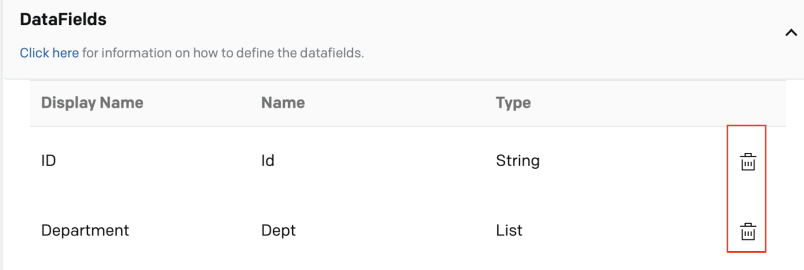 |
Handling Actions
The Action Handler section enables you to write the script that has to be executed when the person completes the task. A coding area is provided here to write the scripts. The script follows standard Javascript language.
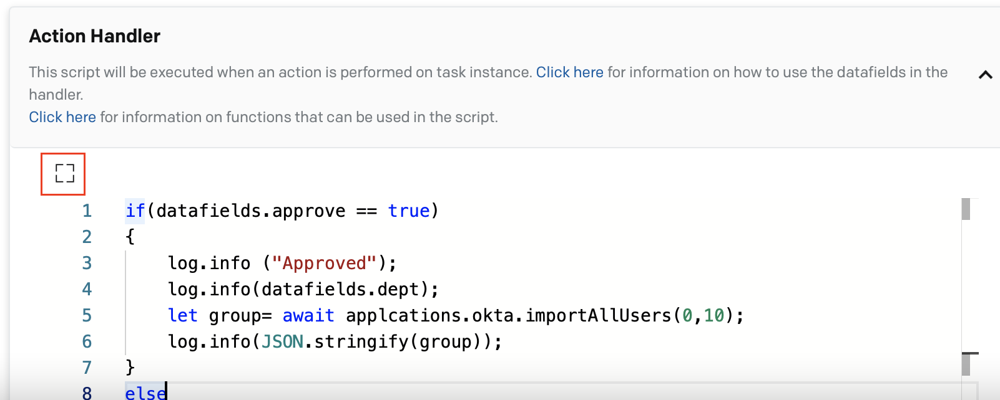
Note: You can click the Expand icon to expand the coding area.
Keywords and Methods
This section details the keywords and the methods that can be used in the script.
Keywords
- datafields - The keyword prefix for data fields. For example, to refer to a data field with the name, approve, use datafields.approve in the script.
- applications - The keyword prefix for applications. For example, to refer to an application with the variable name, okta, use applications.okta in the script.
- utils - The keyboard prefix for utility functions. For example, utils.sendEmail().
Methods
Refer to the guide, Scheduled Script Orchestration - Application Functions, for details on the functions that are supported in the script.
Creating People Tasks Using Script Orchestration
You can create people tasks using script orchestration, based on the task definition that you have created.
The createTask method must be used within the script of a scheduled script orchestration to create a people task. The createTask method must have the following parameters:
createTask('<task-def>', '<assigned-user>, '<due-date>', '<object>')
where
- <task-def> is the name of the people task definition that must be used to create the task,
- <assigned-user> is the email ID of the user to which the task has to be assigned,
- <due-date> is the due time before which an action must be taken on the task, and
- <object> is an object with attributes that match the names of the data fields.
For example, utils.createTask('Add User to Group', 'approver1@aquera.com', new Date(),{'User':'bjensen@example.com', 'Group':'MyGroup'});
Sample script:
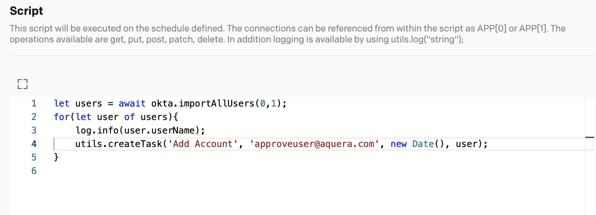
|
Note: |
The user to whom the task has been assigned must have the Approver permission for the people tasks. |
For details on creating the people tasks using the workflow orchestration, refer to the Scheduled Workflow Orchestration Guide.
Task Instance Creation
The task instance is created when the orchestration which includes the people task runs successfully.
In case of a script orchestration, the createTask method in the script is executed and a task instance is created based on the task definition that is referenced in the method.
In case of a workflow orchestration, the workflow containing the people task is executed and the task instance is created.
The new task instance is listed in the Task Instance tab on the People Task page.

The approver can see the assigned tasks that are in Pending status and can take appropriate actions.
People Action on the Tasks
The users can see all the tasks assigned to them on the Task Instance tab. The tasks that are not completed by the user will be in pending status. If the due date has passed for a task instance, it displays the number of days by which the task has been overdue.
|
NOTE: |
|
|
|
The people task Approver permission must be set for you to perform an action on a task. 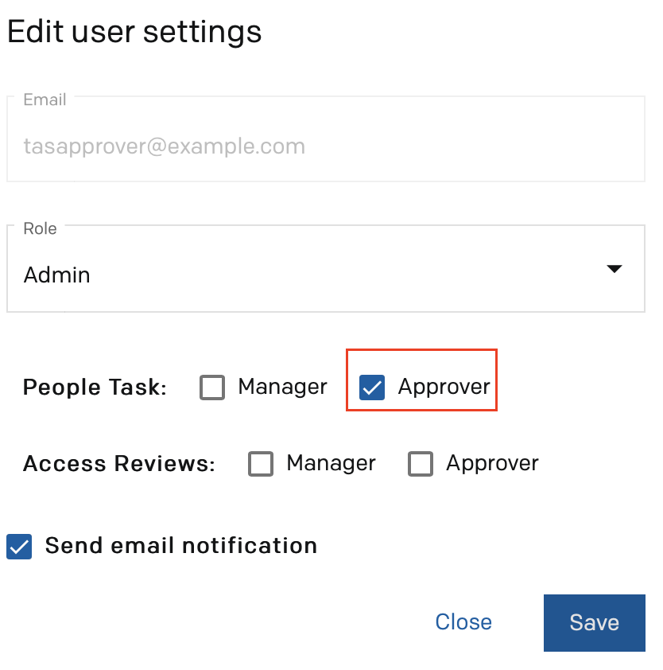 |
- Navigate to the Task Instance tab on the People Task page.
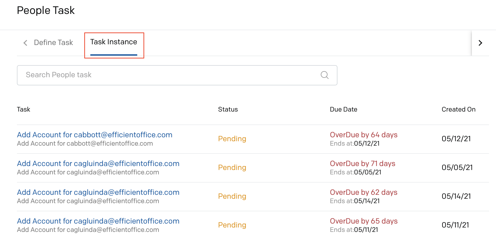
All the tasks assigned to this user are listed on this page.
- Click on a Pending task instance. A pop-up window containing the data fields configured on the task definition page is displayed.
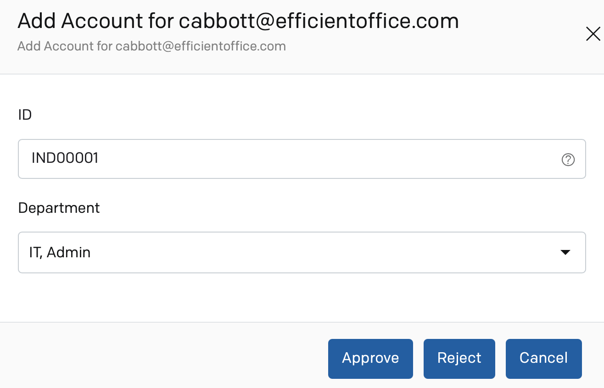
- Enter values in the required data fields, if required, and perform an appropriate action on the task. Some fields may be dynamically filled based on the data field setup in the task definition.
The script provided in the Action Handler section on the task definition page is executed based on your action.
When the action is done, the status of the task instance is changed from Pending to Completed.